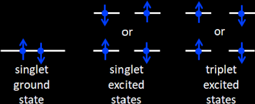
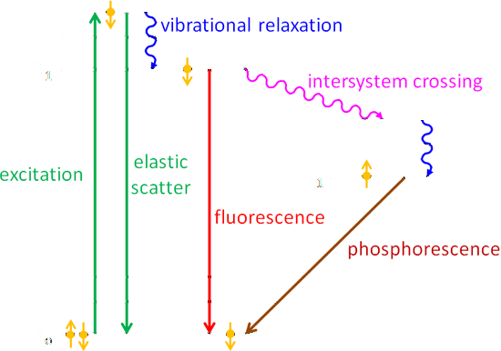

Luminescence refers to the emission of light by processes other than thermal emission, which is called incandescence. There are many types of luminescence: fluorescence, phosphorescence, chemiluminescence, triboluminescence, radioluminescence, and so on. The luminescent processes that are of interest in oceanography are fluorescence, phosphorescence, and bioluminescence, which is a form of chemiluminescence.
When light is absorbed by a molecule, one of three things can happen:
the energy is used for photochemisty, e.g.for photosynthesis in a chlorophyll molecule;
the energy goes into vibrational modes of the molecule, i.e. into heat;
the energy is re-emitted as light via fluorescence of phosphorescence.
The Physics of Fluorescence and Phosphorescence
The Pauli Exclusion Principle is one of the foundations of quantum mechanics. It states that no two fermions in an atom or molecule can have the same set of quantum numbers. Fermions are particles with an intrinsic angular momentum or “spin” that is a half-integer multiple of ℏ = h/2π where h is Planck’s constant. Electrons are fermions with an angular momentum ℏ/2 of and are called “spin 1/2” fermions. Thus for our purposes, the Pauli Exclusion Principle says that two electrons in the same atomic or molecular orbital must have opposite spins, which are called “up” and “down.” (The labels “up” and “down” historically refer to orientations of the angular momentum vector relative the direction of an external magnetic field. “Up” and “down” correspond to spin quantum numbers of s = +1/2 and -1/2.
A singlet state of a molecule is one in which all electrons are paired in up and down pairs. A triplet state is one in which one set of two electrons in different orbitals have the same orientation, up-up or down-down. Fig. 1 illustrates the idea. (Again, the terminology is historical and relates to the number of lines seen in a spectrum for molecules that are not spherically symmetric or when when a molecule is placed in a magnetic field, which splits the energy states. There is also a doublet state corresponding to one un-paired electron, but it does not concern us here.)

Fig. 1: Illustration of singlet and triplet states. The black lines are energy levels and the gold dots are electrons; the arrows represent up and down angular momentum states.
Fig. 2 is a Jablonski diagram of energy states in a molecule. (The guy’s name is properly spelled Jabłoński. The Polish “J” is like the English “Y”; the L with a line through it is like the “W” in water, and the accented N is like the Cyrillic “H” in the Russian word “HeT,” or Nyet in English. So Jabłoński is pronounced something like YabWoNYski with English spelling; the accent is on the second syllable. He is one of those unfortunate souls who, like Khrushchev and Gengis Kahn, are forever doomed to have their names mispronounced by English speakers.) Such diagrams group the energy levels vertically and the spin states horizontally. The black lines represents the energy levels; the thick lines labeled S0 and S1 are the electronic levels, and the thinner lines are vibrational levels. The gold dots with arrows represent electrons in either up or down angular momentum states.

Fig. 2: Jablonski diagram illustrating the fundamental processes of fluorescence and phosphorescence.
Now suppose that one of the electrons of an electron pair, say the down electron, in the ground state of a molecule absorbs a photon. The energy of the photon excites the electron to a higher energy level as shown by the upward green arrow. The time scale for this excitation is on the order of 10−15. The electron spin is still down in the excited energy level. One thing that can happen is that the electron almost immediately drops back to the ground state with emission of a photon with the same wavelength as the excitation photon. This is elastic scattering and is represented by the green downward arrow in the figure. This process is so fast that the excited electron “remembers” the direction of the incident photon, and the direction of the emitted/scattered photon depends on the direction of the incident photon; i.e., the scattering is not isotropic.
Another thing that can happen is that part of the energy of the excited electron is given up to other vibrational modes (i.e., to heat), so that the electron drops to a lower energy level of the excited state. This is indicated by the blue wiggly line labeled “vibrational relaxation” in Fig. 2. This loss of energy is called a “radiationless transition” because it does not involve the emission of a photon. The time scale for vibrational relaxation is 10−12 - 10−10 s. The electron may stay in the excited S1 state for a while, but if the electron is still in the down state, i.e. it is in a singlet state, it can drop back to the ground level by emission of a photon of lower energy (longer wavelength) than the exciting photon. The time scale for this is of order 10−10 - 10−7 s. The ground state then once again contains an up-down pair of electrons. This is fluorescence and is shown by the red downward arrow in the figure. The processes of vibrational relaxation and fluorescence emission take so long that the electron has “forgotten” the direction of the incident photon, and the emitted photon is equally likely to be in any direction; i.e., the emission of fluoresced light is isotropic.
An electron cannot just simply “flip” from a down to an up state, which would violate the law of conservation of angular momentum. Such a flip is therefore a “forbidden transition” in quantum mechanics terminology. However, in quantum mechanics, “forbidden” does not mean “do not ever do something,” just “do not do it vary often.” So a third thing that can happen is that the down electron sitting in the state S1 can exchange some angular momentum with the orbital angular momentum of the molecule via what is called “spin-orbit coupling.” The electron can then flip to an up state. This is another radiationless transition and is called an “intersystem crossing” and is shown in purple in Fig. 2. The time scale for intersystem crossing is on the order of 10−10 - 10−8 s. The electron can also undergo further vibrational relaxation in the triplet state. This up electron is no longer paired with the up electron that was left in the ground state; it is in an excited triplet state, which is labeled by T1 in figure. The energy level of the first excited triplet state T1 is usually lower than for the first excited singlet state because the electrons are further apart, which makes their Coulomb repulsion less. This up electron cannot drop back to the ground state because the result would give two up electrons in the ground state, which violates the Pauli Exclusion Principle; this is another forbidden transition. Therefore the up electron in the T1 state must wait for another chance for spin-orbit coupling, which can flip its spin to down. This takes a long time (on the atomic scale), so the T1 state is called “metastable.” That down electron can then drop into the down-electron spot in the ground level, which is again paired with the up electron in the ground state. This process is phosphorescence and can take from 10−6 to as long as 10 s. The emitted light is again isotropic because of the long time between absorption and re-emission.
In summary, fluorescence is a transition from an excited singlet state to the ground singlet state, and phosporescence is a transition from an excited triplet state to the ground singlet state. There are other pathways to fluorescence. For example, the original absorbed photon could excite the ground state electron to the S2 state (second excited singlet state), which might then do a radiationless transfer of energy to an overlapping vibrational level of S1 the orbital; this is called “internal conversion” (internal within a singlet state), and the time scale is 10−11 - 10−9 s. The electron can then vibrationally relax to the S1 level, and then fluoresce, and so on. It should also be noted that there are many vibrational energy levels in each of the electronic levels illustrated in Fig. 2, and transitions can occur between any of these. This gives a spread of energies of the emitted emitted photons, i.e, a spread of wavelengths.
The time scales of elastic scattering, and of Raman Scattering, are so short, 10−13 s or less, that they are called “scattering.” Fluorescence and phosphorescence are, however, clearly absorption followed much later by the emission of a new photon that is uncorrelated with the absorbed photon. However, for the purposes of most optical oceanography, and for solution of the time-independent radiative transfer equation in particular, fluorescence and phosphorescence can be regarded as “inelastic scattering” and treated with the same mathematical formalism as that used for Raman scattering. This is the case for “solar-stimulated” chlorophyll and CDOM fluorescence.
However, measuring the time dependence of fluorescence emission at time scales of 10−12 to 10−9 s gives information about the internal details of the energy transfers within the molecule. Indeed, the quantum effciency ΦC of chlorophyll fluorescence is dermined by measuring the decay of chlorophyll fluorescence (on a time scale of order 10 ns) excited by an extremely short light pulse (or order 1 ns). Thus time-resolved measurements of chlorophyll fluorescence give information about the photosystems responsible for photosynthesis and the effect of environmental stresses (pH, light adaptation, etc) on those systems. That requires a much more complicated modeling of fluorescence than what is discussed here. See Falkowski et al. (2017) for an overview of time-resolved chlorophyll fluorescence measurements.
The Re-emission of Energy by an Excited Molecule
A molecule will not remain in an excited state indefinitely. After an excitation to an excited electronic state, a molecule invariably will relax back to its electronic ground state.
An excited-state molecule can relax by many different mechanisms. Transitions between energy levels that involve either the absorption or the emission of radiation are called radiative transitions. Transitions between energy levels that occur without the absorption or emission of radiation are called nonradiative transitions. There are several processes by which its energy may be lost:
Dissiciation: The excited molecule breaks into two fragments. No spectroscopic phenomena, beyond the initial absorption, are observed unless the fragments radiate energy by one of the processes mentioned below;
Re-emission: In the absence of collisions, an excited molecule can undergo only processes that conserve energy, and therefore the return to the ground state must involve the emission of a photon. The radiation emitted, which may be collected and displayed as an emission spectrum, is identical in frequency with that absorbed;
Internal conversion (IC): A form of radiationless relaxation, whereby a molecule that is in the ground vibrational level of an excited electronic state migrates directly to a higher vibrational energy level of a lower energy electronic state with the same spin multiplicity. Such a transfer, can only occur close to the cross-over point of the two potential curves. Through a combination of internal conversion and vibrational relaxation the energy of the electronically excited state is given off to vibrational modes of the molecule.
The nonradiative decay process, which involves a transition between states of different spin multiplicity is known instead as Intersystem crossing (ISC).

Internal conversion and intersystem crossing between different vibrational levels of the same energy (isoenergetic).
Fluorescence: If the molecule is in a high vibrational state after electronic excitation, then excess vibrational energy may be lost by intermolecular collisions; The vibrational energy is converted to kinetic energy and appears as heat in the sample; such transfer between energy levels is referred to as 'radiationless'. When the excited molecule has reached a lower vibrational state (e.g. ν' = 0), it may then emit radiation and revert to the ground state; If the radiative decay process involves a transition between states of the same spin multiplicity and is called fluorescence. The readiation emitted, called the fluorescence spectrum, is normally of lower frequency than tha of the initial absorption, but under certain conditions it may be of higher frequency. The time between initial absorption and return to the ground state is very small, of the order of 10−8 s;
Phosphorescence: The radiative decay process involves a transition between states of different spin multiplicity (T1 ⟶ S0) and is called phosphorescence. This can occur when two excited states of different total spin have comprable energies. Thus, imagining the ground state and one of the escited states to be singles (i.e. ΔS = 0), while the neighbouring excited state is a triplet (S = 1). Although the rule ΔS = 0 forbis spectroscopic transitions between singlet and triplet states, there is no prohibition if the transfer between the excited satte occurs kinetically, i.e. through radiationless transitions induced by collision i.e. via the intersystem crossing. Once the molecule has arrived in the triplet state and undergone some loss of vibrational energy in that state, it cannot return to the excited singlet state. It will, threfore, eventually reach the ν' = 0 level of the triplet state. Now although a transition from here to the ground state is spectroscopically forbidden, it may take place but much more slowly than an allowed electronic transition. That is that a phosphorescence material will continue to emit radiation seconds, minutes, or even hours after the initial absorption. The phosphorescence spectrum, as a rule, consists, of frequencies lower than that absorbed.
Stimulated emission: The increasingly important mechanism for removal of excess energy can lead to the production of lase radiation. The helium-neon laser, emits light in the visible region of the spectrum.
Figure 1 shows a plot of the potential energy curves for the ground electronic state and the first excited singlet state, S1 , and the first excited triplet state, T1 (Recall from Section 9-16 that the energy of the triplet state is less than that of the singlet state.) So that the various processes can be viewed easily, we assume that the equilibrium bond length in these three electronic states increases in the order Re(S0) < Re(S1) < Re(T1). The vibrational levels of the ground and electronically excited states are indicated by the horizontal solid lines. The spacing between rotational levels is small compared with that between vibrational levels, so there are discrete rotational levels (not indicated in the figure) that lie between the indicated vibrational levels.

Showing the various ways an electronically excited molecule can lose energy
Although we will consider a diatomic molecule to illustrate the mechanisms by which an electronically excited molecule can relax back to its ground state, our discussion also applies to polyatomic molecules. The vibrational levels of the ground and electronically excited states are indicated by the horizontal solid lines. The spacing between rotational levels is small compared with that between vibrational levels, so there are discrete rotational levels (not indicated in the figure) that lie between the indicated vibrational levels. Absorption to S1 produces a molecule that is in an excited vibrational (and possibly rotational) state, and from our study of the Franck-Condon principle, we know that electronic transitions are depicted by vertical lines in a diagram such as in Figure 15.1.
Differences with Raman
Considerable confusion often occurs between the Raman effect, and the phenomena of fluorescence or phosphorescence. The main points of difference are as follows:
In fluorescence and phosphorescence, radiation must be absorbed by the molecule and an excited electronic state formed; in Raman spectroscopy energy is merely transferred from radiation to molecule (in the form of an electrical perturbation of the ground state electron distribution), or vice versa, but no excited electronic state is formed.
The exciting radiation for fluorescence or phosphorescence must be just that equivalent to the energy difference between electronic states. The exciting radiation for classical Raman spectroscopy can be of any frequency except that which would induce an electronic transition; in the latter case absorption would occur, rather than scattering. Resonance Raman spectroscopy arises from the intermediate case.